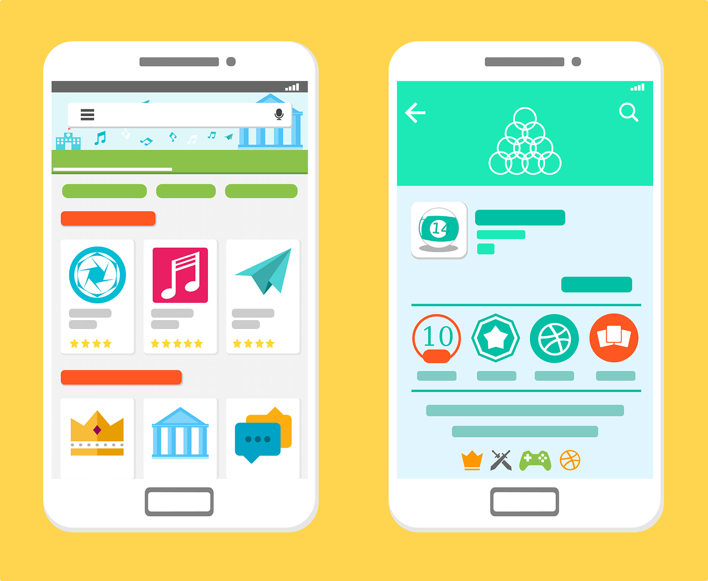
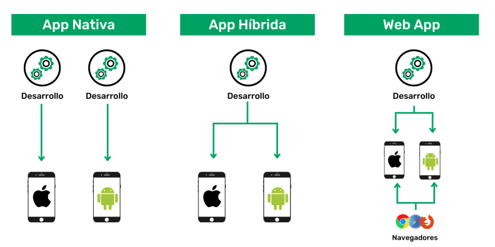
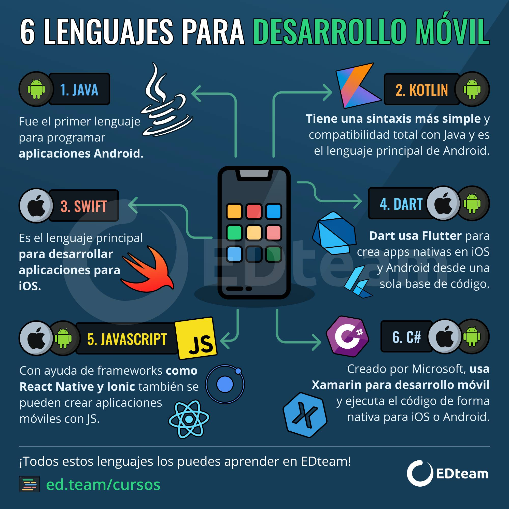

NOCIONES DE REGLAS DE USABILIDAD Y ACCESIBILIDAD EN APLICACIONES INDEPENDIENTES, MÓVILES.
Contenido
1.Diferenciar entre una aplicación independiente y una aplicación móvil.
2.Diferenciar entre una aplicación móvil de carácter híbrida o una de carácter nativa.
3.Indagar sobre los diferentes ecosistemas existentes de los dispositivos móviles, con el objetivo de conocerlos diferentes IDE y lenguajes de programación que actualmente se utilizan para dispositivos móviles.
DIFERENCIAS ENTRE UNA APLICACION INDEPENDIENTE Y UNA APLICACCION MOVIL
Instalación
Esta es una de las principales diferencias entre una web app y mobile app. En el caso de las aplicaciones para móviles, su instalación es un programa que se descarga de una web o de una tienda de aplicaciones y se instala en el dispositivo móvil del usuario. Para las aplicaciones web es una herramienta que está alojada en un servidor y que los usuarios puede acceder desde la red mediante un navegador. Se podría decir que es una página web que se ha adaptado a los formatos de programación de smartphones o tablets.
Acceso
Para acceder mediante una aplicación móvil es de una forma directa, mediante la propia app instalada en el dispositivo, como se ha mencionado anteriormente. En las aplicaciones web se accede mediante un navegador web, que podrá haber sido mediante búsqueda web o escrita directamente la URL del sitio.
Conexión
En muchas de las aplicaciones móviles se puede gestionar el servicio o las funciones sin necesidad de conexión a Internet. Aunque cada vez son menos las apps que se pueden usar sin red, varía según la función o servicio que ofrezca. Por el contrario, en las aplicaciones webs sí existe la obligación de tener conexión a Internet.
Actualizaciones
Las actualizaciones de las aplicaciones móviles deben ser autorizadas y descargadas por el propio usuario, se recomienda tener las aplicaciones móviles siempre actualizadas, ya que ofrecen mejor experiencia y corrigen errores. Por el contrario, en la aplicación web no hay que actualizar nada, se realiza de forma automática.
Descarga y almacenamiento
La aplicación móvil podrá ser descargada e instalada de tiendas de aplicaciones, así como de cualquier web, y ocupará un espacio permanente en el almacenamiento del dispositivo. La aplicación web no necesita ser descargada, solamente necesitar abrir la URL y usarla a través del navegador. Esta es otro de las grandes diferencias entre web app y mobile app y que divide a usuarios.
Alojamiento
En las apps móviles el alojamiento es el propio software o programa, sin embargo, para las aplicaciones web cuando hablamos de alojamiento se necesita de una base de código y estar alojado en un servidor.
Lenguaje de Programación
En la app móvil el lenguaje de programación que se utiliza es mediante Javascript. Por el contrario, en la aplicación web suele realizarse mediante HTML, CSS y Javascript, una combinación de varios lenguajes para poder adaptarse a los diferentes dispositivos.
Diseño
Para poder diseñar una aplicación móvil el desarrollador debe crear y diferenciar las versiones de sistemas operativos en los que quiera ocupar. En la aplicación web el desarrollo de diseño es estándar como cualquier otra página web.
DIFERENCIAS ENTRE UNA APLICACIÓN MÓVIL HÍBRIDA Y UNA APLICACIÓN NATIVA
App Nativa
Una app nativa está desarrollada específicamente para las principales plataformas móviles como Android o iOS. Este tipo de aplicaciones están muy bien si tu proyecto requiere cierto rendimiento y estabilidad. Las aplicaciones nativas son la opción idónea si estás buscando una app offline o que en determinados momentos pueda funcionar sin conexión a Internet. Es decir, estas aplicaciones son perfectas para aquellos proyectos que puedan integrarse con conexión inalámbrica propia, ya sea Bluetooth o NFC, por ejemplo.
App Híbrida
A diferencia de las nativas, las apps híbridas se adaptan a cualquier plataforma porque están desarrolladas con un patrón de diseño responsive. Es decir, se desarrolla la aplicación web y esta se adapta a cualquier dispositivo, sin importar tamaño o resolución del mismo. Dejamos a un lado la programación lineal para adentrarnos en la programación reactiva y orientada a objetos. Además, se debe trabajar con frameworks para desarrollo móvil que ofrecen los recursos de forma neutral, logrando agilizar el proceso.
INDAGAR SOBRE LOS DIFERENTES ECOSISTEMAS EXISTENTES DE LOS DISPOSITIVOS MÓVILES, CON EL OBJETIVO DE CONOCERLOS DIFERENTES IDE Y LENGUAJES DE PROGRAMACIÓN QUE ACTUALMENTE SE UTILIZAN PARA DISPOSITIVOS MÓVILES
¿Que es IDE?
Antes de la llegada de los IDE, los desarrolladores usaban editores de textosimples para codificar, guardar la aplicación en un editor de texto, ejecutar elcompilador, buscar errores y volver al editor para verificar el código. Todo esteproceso consumió mucho tiempo y esfuerzo del desarrollador, ya que siemprenecesitaban cambiar entre varias aplicaciones. Aquí es donde entra en juego unIDE que reúne todas las herramientas esenciales para desarrolladores en un solo marco. IDE es un programa de software o una combinación de herramientas que necesitapara escribir y probar su software. En resumen, un IDE es una combinación deherramientas básicas necesarias para el desarrollo de aplicaciones.Un IDE consta al menos de un editor de texto, herramientas de automatización decompilación y un depurador. Además, algunos IDE vienen con los beneficios deinstalar complementos para extender sus funcionalidades a otro nivel. Algunos Ejemplos de los IDES mas utilizados para desarrollo móvil:
•Android Studio
•Qt IDE
•Xcode
•Eclipse IDE
•JetBrains Rider
•Visual Studio Code
•DroidScript
Lenguajes de programacion movil
Un lenguaje de programación es un lenguaje formal con el que, a partir de una serie de símbolos y códigos, el programador informático da una serie de órdenes auna máquina. En este caso, a un ‘pequeño ordenador’ que es el propio smartphone.
De esta forma, este especialista se ocupa de crear y desarrollar las aplicaciones móviles que, más tarde, los usuarios emplearemos en nuestro día a día.
Algunos lenguajes de programación no son exclusivamente para programaraplicaciones móviles, sino que también son útiles para crear estas. Algunosejemplos:
• Java.
• Kotlin.
• Python.
• JavaScript.
• Switf.